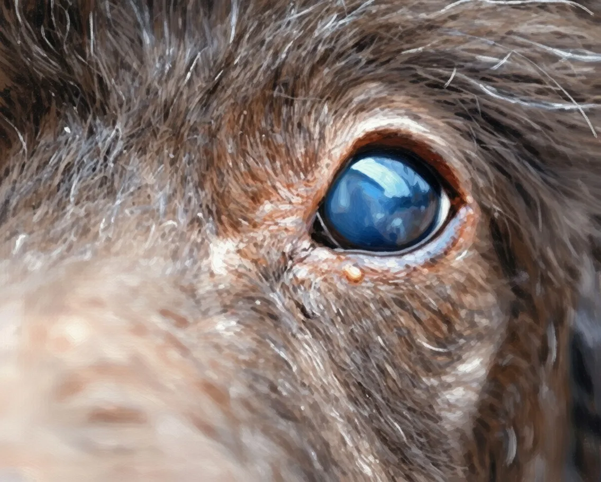

Cloudy Eyes in Dogs: What It Means and When to Worry


As a pet owner, it's natural to feel concerned when you notice any changes in your dog's behavior or physical health. One common issue that can cause worry is cloudy eyes in dogs. We understand that it can be alarming to see your furry friend's eyes become cloudy, and it's essential to know what it means and when to worry. In this article, we will delve into the world of dog eye problems, exploring the possible causes, symptoms, and treatment options for cloudy eyes in dogs.
Table of Contents
What are Cloudy Eyes in Dogs?
Cloudy eyes in dogs refer to a condition where the eyes appear opaque or hazy due to various underlying causes. It's essential to understand that cloudy eyes can be a symptom of an underlying condition, rather than a disease itself. We recommend that you consult with a veterinarian to determine the cause of your dog's cloudy eyes.
Causes of Cloudy Eyes in Dogs
Also Read
Check out more pet care guides hereThere are several possible causes of cloudy eyes in dogs, including:
| Cause | Description |
|---|---|
| Nuclear Sclerosis | A common age-related condition that affects the lens of the eye, causing it to become cloudy. |
| Cataracts | A condition where the lens of the eye becomes opaque, causing vision loss and cloudy eyes. |
| Glaucoma | A condition that affects the optic nerve, causing increased pressure in the eye and potentially leading to cloudy eyes. |
| Corneal Ulcers | An open sore on the cornea, which can cause cloudy eyes and vision loss. |
It's crucial to note that some breeds are more prone to certain eye conditions. For example, Cocker Spaniels and Poodles are more likely to develop cataracts, while Bulldogs and Pugs are more prone to corneal ulcers.
Breed-Specific Eye Conditions
We recommend that you research your dog's breed to understand the potential eye conditions they may be prone to. This knowledge will help you identify any issues early on and seek veterinary care promptly.
Symptoms and Diagnosis
The symptoms of cloudy eyes in dogs can vary depending on the underlying cause. Common symptoms include:
A cloudy or hazy appearance in one or both eyes, redness, discharge, squinting, or avoiding bright lights.
To diagnose the cause of cloudy eyes, your veterinarian will perform a comprehensive eye examination, which may include:
- Visual examination
- Slit-lamp biomicroscopy
- Fluorescein staining
- Ultrasound or other imaging tests
Treatment Options
The treatment for cloudy eyes in dogs depends on the underlying cause. In some cases, surgery may be necessary to remove cataracts or repair corneal ulcers. We recommend that you work closely with your veterinarian to determine the best course of treatment for your dog.
Surgical and Non-Surgical Options
In some cases, non-surgical options such as medication or therapy may be sufficient to manage the condition. However, in more severe cases, surgery may be necessary to restore your dog's vision and alleviate discomfort.
Expert Tips and Common Mistakes
As a pet owner, it's essential to be aware of the common mistakes that can exacerbate cloudy eyes in dogs. We recommend that you:
- Avoid touching or rubbing your dog's eyes, as this can cause further irritation
- Keep your dog's eyes clean and free of discharge
- Provide a balanced diet rich in omega-3 fatty acids to support eye health
- Schedule regular veterinary check-ups to monitor your dog's eye health
Remember, early detection and treatment are crucial in managing cloudy eyes in dogs. If you notice any changes in your dog's eyes or behavior, consult with your veterinarian promptly.
Conclusion
In conclusion, cloudy eyes in dogs can be a symptom of an underlying condition that requires prompt veterinary attention. We hope that this article has provided you with a comprehensive understanding of the causes, symptoms, and treatment options for cloudy eyes in dogs. Remember to always prioritize your dog's eye health and seek veterinary care if you notice any changes in their eyes or behavior. By working together, we can ensure that your furry friend receives the best possible care and enjoys a happy, healthy life.
Dr. Amelia Richardson
DVM, Senior Veterinary Editor
Veterinarian with 12+ years of experience in small animal medicine, pet nutrition, and behavioral science. Passionate about helping pet owners provide the best care for their furry companions.
Leave a Comment